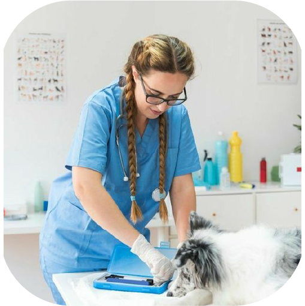
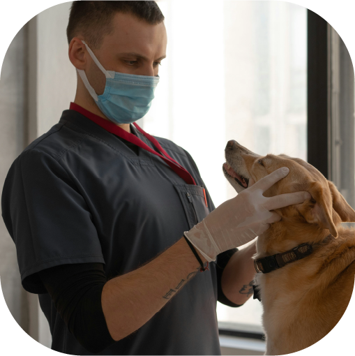
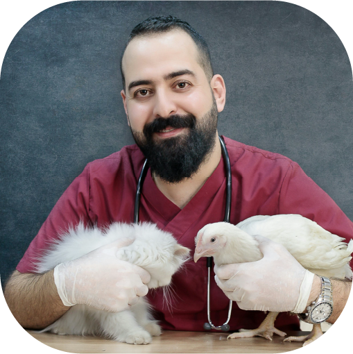
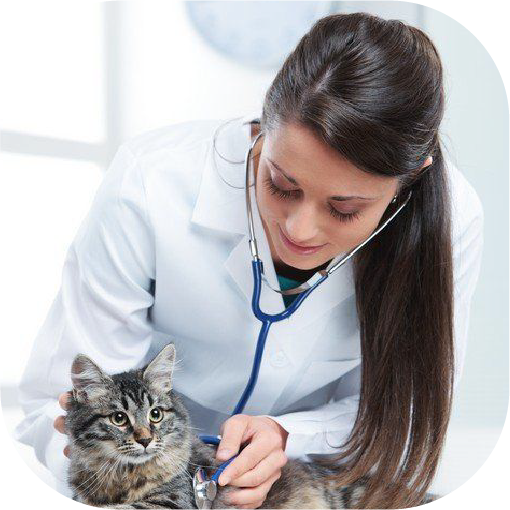
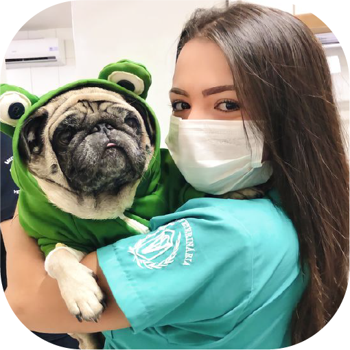
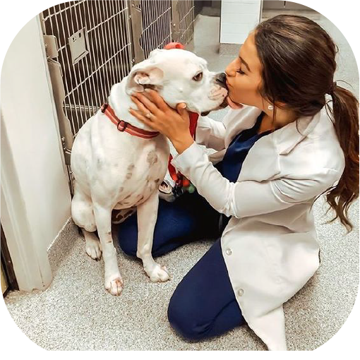

|  | ||
Médico GeneralJuan RamirezJuan diagnostica, controla y erradica |
Cirujano MédicoDaniel CoronadoDaniel hace el tratamieno quirúrgico de patologias |
Médica OdotólogaSandra MilenaSandra identifica y trata enfermedades |
|  |  |  |
Auxiliar VeterinarioCamilo LopezCamilo dirige la atención y |
Asistente TécnicoEstiven MoraSe especializa en cosas |
EnfermeraKaren GónzalesKaren te ayudara con la entrega |
|  |  |
Auxiliar de enfermeriaLaura García Laura te dara respuesta a |
Ayudante VeterinarioVannesa SanchezAsi como camilo es auxiliar |